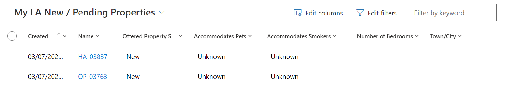
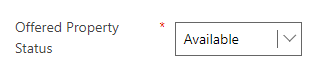
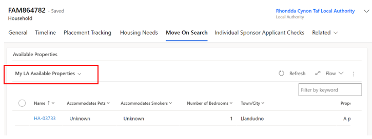
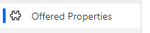
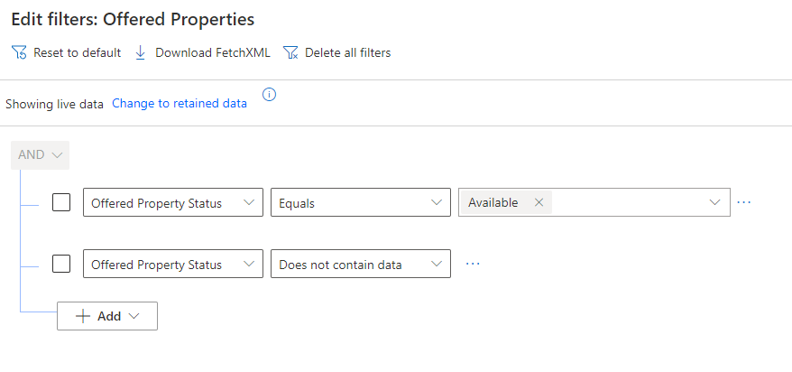
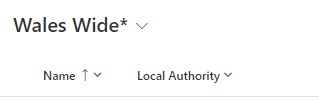
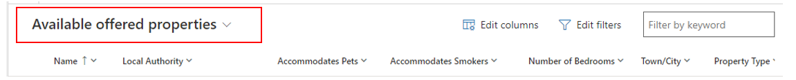

Move on Process User Guide
Download a copy of the User Guide
If you need to download a copy of the latest version of the Move On Process User Guide click on the link below:
Move on Process User Guide - Version 1 - Updated 08/07/2023Acronym Section
It is important to understand the terminology associated with the move on and overall HfU processes and to acknowledge the acronym’s associated with these:
| Acronym | Phrase | Description |
|---|---|---|
| EOI | Expression of Interest | Someone who has reached out to the LA or WG to express they are interested in housing a Ukrainian citizen / family |
| IA | Initial Accomodation | Initial and temporary accommodation facilitated by the Welsh Government for applicants on the Welsh Super Sponsor scheme |
| WC | Welcome Centre | Previous term used for initial accommodation – for temporary accommodation provided by Welsh Government for applicants on the Welsh Super Sponsor scheme |
| UDP | Ukraine Data Platform | The data platform used to record all information regarding to both Welsh Super Sponsor and Individual Sponsor applicants |
Acronym's Section
Prior to July 2023, the way in which we handled the move-on process was using a spreadsheet solution sitting in an Objective Connect environment to enable sharing.
Move-on functionality was previously not developed in UDP as at the time there was insufficient time to stand-up a solution and the UDP information governance restrictions hindered our ability to make the move-on data available across all local authorities.
The move-on process has become the key focus of the Ukraine programme. In closing Initial Accommodation (IA) and Welcome Centres (WC) the overarching aim is to move people from WC/IA accommodation to longer term accommodation including hosted accommodation. We are also looking to place new applicant arrivals directly into hosted accommodation to reduce use of initial accommodation.
There is now a more definitive need to incorporate the move on process into the UDP and by doing so will reduce data duplication, provide a more consistent approach to managing move-on, make processes easier and will provide us with a complete single source of the truth.
The new process, as such, will remain quite like the current process:
- EOI offers will need to be triaged by the local authority.
- All standard housing and DBS checks will need to be completed.
- Once checks have successfully been completed the property will be made available to all LA’s when searching.
- LA’s will be able to locate properties based on the criteria set out in the housing need for each household.
- A property can be reserved by any LA and once reserved, becomes unavailable to others that are using the move on search function.
- Once matching has been completed a placement tracking will be auto created.
New processes that will be introduced following the move into the UDP (on 5th July 2023) will be as follows:
- There will be no requirement to upload the EOI manually into the UDP and you will not be required to enter data previously received via Objective Connect (this will be made Read Only) . All EOI’s that come through the Welsh Government Homes for Ukraine smart survey will be automatically uploaded via a data load.
- The LA will be responsible for inputting information into a new ‘offered property’ tab which will help aid the search functionality.
- The new search functionality will ensure that only one property can be reserved at a time.
Please Note:
- EOI’s that are matched outside of the smart survey, usually as a result of self-matching will still have to be manually uploaded to the platform.
- The move on process will also amalgamate all available hosts – not just EOI’s. This means that when a household leaves their hosted accommodation and the host is still willing to host another family, the LA can recycle this record to be used within the reservation process on the move on search tab.
EOIs and the Data Feed
All data we receive from the EOI smart survey will automatically be uploaded into the UDP. The data will be split into two parts and will feed into the relevant sections.
- EOI data that relates to the host / host address will be uploaded into the system as a sponsor record for that host address. The sponsor will be created automatically based on the information generated from the smart survey and will sit with the local authority where the host address is located.
- EOI data that relates to the offer of the property will be separated and linked into the fields on the offered property tab within the host address section.
It will be the Local Authority’s responsibility to contact the proposed host to clarify the data and capture any missing information.
LA / Contact Centre Responsibilities for the Move On Process
Both the contact centre and each respective LA will have responsibilities within the UDP to ensure that the move on process runs smoothly.
Contact Centre Responsibilities
The Contact Centre’s responsibility within the move on process is to ensure that direct allocations for Super Sponsor applicants runs smoothly.
- The overarching concept of direct allocation to hosts includes allocating arrivals through the Welsh Government Super Sponsor Scheme to hosts prior to their arrival in Wales. People will travel directly to hosts on arrival in the UK rather than placed in initial accommodation. Directly allocating people reduces the demand on initial accommodation and the need for local authorities to move people on from initial accommodation.
- The Contact Centre will identify available host offers via the move on search. They will then liaise with local authorities to coordinate the direct allocations and matching people to suitable hosts. People will not be directly allocated to a host by the Contact Centre without the agreement of the receiving local authority. The intention is to directly allocate all new arrivals to hosts where suitable host offers are identified. People will be offered initial accommodation in the form of a Welcome Centre or holiday park where a suitable host is not available.
- The Contact Centre will liaise between hosts and guests regarding arrival and travel to Wales. The contact centre will also manage the reservation process via the UDP to ensure that household records are linked and moved to the owning Local Authority of the new host / host address once the reservation process has been completed.
Local Authority Responsibilities
Each local authority will need to ensure that they have completed the following.
For Households/Applicants:
- Every Household within their LA has a completed Housing Need Tab.
- When a person joins or leaves the household the Housing Need Tab is updated to reflect the new household set up.
- The household timeline is updated with any important (but non sensitive) notes regarding the household.
- When actioning the move on search the LA must do this from the household tab and should consider the household needs when filtering their search.
- When a property has been reserved the LA must liaise with the host address Local Authority (if this is different to their own)
- When a property has been reserved, process the reservation through the stages, via the reservation status dropdowns, until the match is complete – regardless of whether the property is in your LA or not.
For sponsors/hosts:
- For every Sponsor or host (EOI), all sponsor and household checks must be completed and toggled before the property is made available in the move on search.
- Keep track of each reserved property within your LA (by means a of a view)
- Keep track of any hosts and host addresses that become available after their applicants have vacated to conduct a triage call for potential further hosting responsibilities (accessed by means of a view)
- Liaise with LAs who reserve one of your properties for their household – to arrange meetings and travel.
Housing Need Section
The housing need section is now a tab within the household page. You will no longer access the housing need via the ‘Linked housing need’ field on the household page, this has been removed. Although the record may look the same, we have developed and added a few fields that will contribute to assisting the matching process.

Updating / Creating a Housing Need
If a person joins or leaves a household ID group, you must:
- Update the linked housing need requirement for the existing household.
- Create a new housing need for the person that has been moved (if they are not joining another group).
Every Household ID, where the household is seeking new accommodation, should have a completed housing need tab which helps Local Authority colleagues when matching individuals to suitable accommodation, whether that be for individuals needing to be re-housed via the super sponsor scheme or for individuals who have arrived on the individual sponsor scheme.
Updating an existing Housing Need
- Go to the Applicants section and double-click on the name of an applicant to get to their individual applicant screen.
- On the Summary tab, click on the Household ID (FAM# or WG#).
- On the Household screen click on the Housing Need tab.
- Make changes to the fields as required. Those marked with a red asterisk (*) are mandatory.
- Once you have made the required changes, make sure to save by clicking the Save button or Save & Close button.


Creating a new Housing Need
- Go to the Applicants section and double-click on the name of an applicant to get to their individual applicant screen.
- On the Summary tab, click on the Household ID (FAM# or WG#). This will take you to the Household section.
- On the Household screen click on the Housing Need tab – if there is no active housing need you will see the message: Source record not selected.
- You will need to click the Create Housing Needs button, which will show at the top of the household screen.
- You will then see a pop up confirming that a housing need will be created for the household – select ok.
- This will generate a blank housing need screen.
- Complete the fields as required. Those marked with a red asterisk (*) are mandatory.
- Once you have made the required changes, make sure to save by clicking the Save button.
- As the Housing Need Record sits within its own tab, it will automatically link to the Household record.

Host Address Section
Sponsor / host checks
The sponsor or prospective Host (EOI) and their property should be checked prior to arrival, or very shortly after, a person or household are matched to them. The sponsor check box (shown below) can be used to track when a check has been carried out. The two checks with padlocks will be provided the DLUHC data feeds and only apply to Sponsors, who have sponsored an application.
The checks should be toggled on the data platform once completed and include:
Introductory Contact Made – The LA has reached out to the host to make introductions, confirm they are still happy to host, provide all necessary information regarding the hosting and ensure they are prepared.
Consent for DBS – within the introductory contact the host should provide consent to start the DBS process, this will then either be completed by the individual or by the LA as per local processes.
Basic DBS Check Completed - to ensure that the Basic DBS check has been completed.
Enhanced DBS Check Completed - to ensure that the Enhanced DBS check (if required) has been completed.
Please note: only one DBS check needs to be completed, this is at the discretion of each LA as to which one, however it is recommended that an enhanced check be completed if the host is willing to house families with children or vulnerable adults.
Sponsor checks only: As part of the application process, a sponsor may be rejected by the home office if they fail their PNC (Police National Computer services) or Home Office Warnings Index Checks. This will be recorded in the data platform under a locked field on the sponsor record and will be read only for information only. It will be the Home Office’s responsibility to rematch the applicant to a suitable sponsor for their application, this will also show in the sponsor checks section under Home Office Rematching as a read only checkbox for information only.
Host Address Related Checks
The Host Address section has had some small changes made to ensure accurate data capture. On each host address record, you will see the housing inspection checkbox:
Housing Inspection Check - to ensure the property is suitable and meets the correct criteria to host applicants.
This has been removed from the Sponsor/Host section and will now sit on each individual host address record. The toggle will need completed for each individual property that the sponsor/host has offered once the checks have been confirmed successful.
Adding an additional host address
A host address is the address of the accommodation being offered to house applicants travelling to Wales. Occasionally, a host may have multiple addresses and may wish to offer a few of these to host within. The host may or may not live at these addresses.
To add a host address you need to:
- Click on the Sponsor section in left hand navigation and find the sponsor/host record required.
- Open the Sponsor/host record.
- Click on the Host Addresses Tab and click on New Host Address
- Complete the form, considering the following:
- Address fields are for the accommodation that is being offered which may not necessarily be the address at which the host lives.
- Staying with Sponsor field indicates whether the property is the main residence of the sponsor and their family e.g. someone would be allocated a room in the sponsors/host house rather than accommodation separately owned by the sponsor/host.
- Save the record.
- You now need to assign the host address records to ensure everyone in your local authority group can access the records - Select the address and click Assign Host Address.
- Assign to User or Team and then hit enter to browse your local authority.


To check, this has happened correctly, you can check the host address to ensure the host local authority has changed as well as the ‘owner’ in the top right corner of the record. This may take a little while to filter through so refresh after 20 to 30 seconds.
Creating a new host address will also create a new offered property tab. These two will be linked via the Host Address reference.

Offered Property Tab
The offered property tab sits within the host address section as a separate tab. This tab contains anonymised data and a partial postcode, to ensure that other LA’s access relevant data only.
The purpose of the offered property tab is to document the details of the property being offered, so that the Household property search shows viable properties only.
It is very important that this information is kept up to date and accurate to ensure that property searches across the board become successful reservations/matches.
The tab will include the following information, please complete the fields as required. Those marked with a red asterisk (*) are mandatory:

An offered property tab will appear automatically on any EOI data or when an additional address is added to a record. Existing sponsor records within the system that have an active hosting will still have an offered property tab but this will be empty and show ‘Source record not selected’:

Once the current placement ends and the host address becomes available, the offered property status will revert to ‘Pending Checks’, and a blank offered property form will generate in the offered property tab. It will be your responsibility to communicate with the host to enquire if they wish to host another family. If they do, all previous checks should be confirmed to still be valid before making changing the offered property status to available.
Please note: If the host no longer wishes to house any new applicants, then their records need to be set to withdrawn and this will automatically set the offered property tab to removed.
To view all offered properties in your area you will need to access the Offered Properties tab via the left have navigation:

You can then access the view ‘My LA New / Pending Properties’ from the dropdown menu which will show all new offered properties and all properties currently pending checks.
To access all Available properties in your area you need to select the ‘My LA Available Properties view:

Searching for an Offered Property
Once all checks are complete on an EOI record, the offer becomes viable and the status will need to be changed from ‘pending checks’ to ‘available’ on the offered property tab.
This means that the record will be viewable to all local authorities across Wales for them to reserve where appropriate.
It is imperative that the housing need tab is kept up to date to ensure an accurate search is carried out and the correct host / household match is made.
Each LA will be able to search for all available offered properties via the ‘move on search’ tab on the household record.

Move On Search
Within the Household Move On Search tab, each local authority will have access to the following view:

The view can show records from all local authorities across Wales in one table but also enables users to filter a few LA’s at one time or narrow the search down to one LA at a time. This will ensure that LA’s can tailor their initial findings based on area, which can either be across the whole of Wales or for a particular LA and its surrounding areas if required.
To search by the whole of Wales:
Select the Wales Wide drop down in the Available Properties table. This will show all available properties across every local authority within Wales. This view can be filtered to tailor the search to the household needs, including filtering to specific locations.

To search by individual LA:
Select the ‘My LA Available Properties’ drop down in the Available Properties table. This will show all available properties within your local authority only. This view can be filtered to tailor the search to the household needs.
Filtering the content of the view
Each user can use filtering on each column to drill down on the criteria within the view to enable a more linear search of available properties. This will ensure that each category matches the criteria within the household housing need.
An example would be that for a household with two parents and one teenage child, you would filter the number of bedrooms to ‘Equals’ and then enter the value of 2 – meaning only 2 bedroom properties would show within the view.
Users can filter the view across all categories to manipulate the data and to ensure maximum accuracy in their property search.
Basic Editing of Filters
Users can add simple filters and/or sort the view directly from the columns. This can be done by either filtering on contained information within the view or sorting the view in alphabetical order. To do this you will need to:
- Go the column of the view you would like to filter.
- Click the downwards arrow tab
- To sort A-Z or Z-A / ‘smaller to larger’ or ‘larger to smaller’ the user can select which either dropdown is relevant.
- To filter the data, you can select the ‘filter by’ dropdown.

- You can then select from a range of dropdowns and correlating information to narrow down your search.
- Once applied you will then see the funnel at the top of the column which indicates a filter has been applied

- You can clear the filter by repeating the process of clicking the downwards arrow tab and selecting clear filter

To Create More Specific Filters
To create more specific filters for the move on search such as showing only properties with a certain number of bedrooms, you will need to go to the ‘Offered Properties’ tab in the left-hand navigation.

To add a new filter:
- Select the Edit filters button.
- Click the Add drop-down and choose to filter by Row, Group or Related Entity.
- Choose the row, group or entity you want to filter by (for example, Number of beds) and specify the criteria.
- Add more rows, groups or entities to filter by, or delete as applicable.
- Check the checkbox at the start of each row before attempting to apply your filters. 
- Click the Apply button. This will filter the selection on your screen.

Once you are happy with your new filtered view you can save this as a new view which will then be available in the views on the move on search tab:
- Click on the arrow next to the system view title.
- A dropdown menu will appear. 
- Click save as new view.
- Edit the title of the view to what you want to call it. 
- This will now appear in the view’s dropdown on the move on search tab.